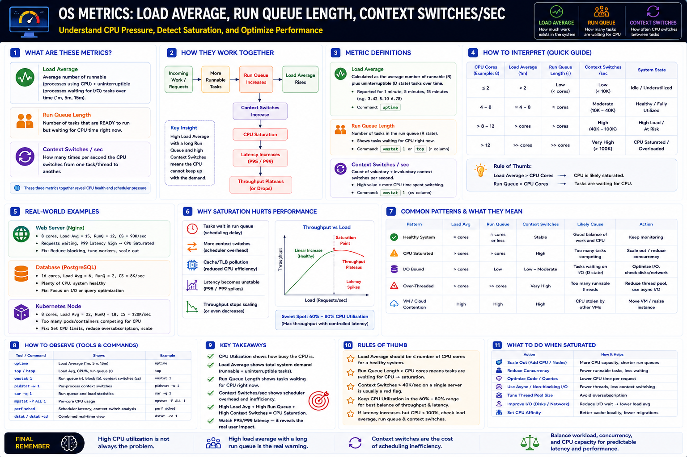

Scheduler Pressure • CPU Saturation Detection • Latency Correlation • Production Diagnosis
Core Idea — Three Metrics, One Story
CPU utilization at 75% tells you almost nothing on its own. Load average 12, run queue 10, and context switches at 80K/sec on an 8-core server tell you the system is saturated. These three metrics form a chain — read them together.
Load Average
Overall system demand — runnable + uninterruptible I/O tasks over 1m / 5m / 15m. How much work exists?
uptime
Run Queue Length
Runnable threads waiting for CPU right now. Best real-time CPU pressure signal. How many tasks waiting?
vmstat 1 → r col
Context Switches/sec
Voluntary + involuntary CPU switches per second. Measures scheduler overhead. How much CPU wasted switching?
vmstat 1 → cs col
1. Load Average — Deep Dive
Load average is the exponential moving average of runnable (R) and uninterruptible sleeping (D) tasks over 1, 5, and 15 minute windows.
Interpretation (8-core server)
| Load Avg | Meaning | Action |
|---|---|---|
| ≤ 4 | Plenty of headroom | Monitor normally |
| 4 – 8 | Healthy, fully utilized | Watch for growth |
| 8 – 12 | At capacity, some wait | Investigate run queue |
| > 12 | Saturated — tasks waiting | Act now |
| > 25 | Severe overload | Immediate action |
Trap: High load average with low CPU % usually means processes are blocked on I/O (D state) — not a CPU problem. Always check run queue AND iowait together.
2. Run Queue Length — Deep Dive
Run queue shows tasks ready to run but waiting for a CPU core right now. Unlike load average it is instantaneous — ideal for real-time diagnosis.
Healthy Values
| Run Queue (r) | vs Core Count | State |
|---|---|---|
| < cores | Under-utilized | Idle / headroom |
| = cores | Fully utilized | Healthy |
| > cores | Over-utilized | Saturation begins |
| >> cores | Much higher | Scheduler bottleneck |
Commands
3. Context Switches/sec — Deep Dive
Every context switch: saves registers, loads another task's state, disrupts cache and TLB. Millions of switches per second = significant CPU overhead with no useful work done.
Voluntary vs Involuntary
| Type | Cause | Signal |
|---|---|---|
| Voluntary | Thread blocks on I/O, lock, sleep | I/O or lock contention |
| Involuntary | Time slice expires — OS preempts | Thread oversubscription |
What High Context Switches Indicate
Reference Ranges
| Context Switches/sec | Typical Meaning |
|---|---|
| < 10K | Low — idle / lightly loaded |
| 10K – 40K | Moderate — healthy, fully utilized |
| 40K – 100K | High — approaching saturation |
| > 100K | Very high — CPU saturated / overloaded |
Commands
On a single server, context switches > 40–100K/sec is usually a red flag. Context switches are the cost of scheduling inefficiency.
How They Work Together — The Chain
Metric Layer Summary
| Metric | Layer | What It Reveals |
|---|---|---|
| Load Average | System | Overall workload pressure (incl. I/O) |
| Run Queue | Scheduler | CPU-specific waiting tasks (instant) |
| Context Switches | CPU | Scheduler overhead cost |
Quick Interpretation Guide (8-core example)
| CPU Cores | Load Avg | Run Queue | Ctx Sw/s | State |
|---|---|---|---|---|
| 8 | ≤ 2 | < cores | < 10K | Idle |
| 8 | 4 – 8 | = cores | 10–40K | Healthy |
| 8 | 8 – 12 | > cores | 40–100K | High / At Risk |
| 8 | > 12 | >> cores | > 100K | Saturated |
Rules of Thumb
Real-World Examples & Common Patterns
Web Server (Nginx) — Saturated
CPU saturated. Requests waiting. P99 rising. Fix: reduce blocking, tune workers, scale out.
DB Server (PostgreSQL) — Healthy
Healthy. No CPU bottleneck. Latency likely caused by I/O or query plans — investigate differently.
Kubernetes Node — Overloaded
Too many pods competing. Fix: CPU quotas, reduce oversubscription, scale cluster.
Common Pattern Diagnosis
| Pattern | Load Avg | Run Queue | Ctx Sw | Likely Cause | Action |
|---|---|---|---|---|---|
| Healthy | = cores | = cores or less | Stable | Good balance | Keep monitoring |
| CPU Saturated | > cores | > cores | High | Too many tasks competing | Scale out / reduce concurrency |
| I/O Bound | > cores | Low | Low–Moderate | Tasks waiting on I/O (D state) | Optimize I/O, check disks/network |
| Over-Threaded | > cores | >> cores | Very High | Too many runnable threads | Reduce thread pool, use async I/O |
| VM Contention | High | High | High | CPU stolen by hypervisor (%steal) | Move to dedicated host / resize |
Observability Tools — Complete Reference
| Tool | Shows | Example |
|---|---|---|
uptime | Load avg 1/5/15m | uptime |
top / htop | Load, CPU%, run queue (r) | top |
vmstat 1 | r (run queue), b (blocked), cs (ctx sw) | vmstat 1 |
pidstat -w 1 | Per-process ctx switches | pidstat -w 1 |
sar -q 1 | Run queue + load stats | sar -q 1 |
mpstat -P ALL 1 | Per-core CPU breakdown | mpstat -P ALL 1 |
perf sched | Scheduler latency analysis | perf sched timehist |
dstat -cd 1 | Combined real-time view | dstat -cd 1 |
What To Do When Saturated
Scale Out (Add CPUs)
More CPU capacity → shorter run queues
Reduce Concurrency
Fewer threads → less contention, less switching
Optimize Code
Lower CPU time per request → less load per req
Async / Non-blocking
Fewer threads → less scheduling pressure
Improve I/O
Reduce I/O wait → lower load average
CPU Affinity
Better cache locality, fewer migrations
Engineer Progression
Interview Cheat Sheet
Principal Engineer Takeaway
Load Average — system demand including I/O. Smoothed over time. Compare against core count.
Run Queue — CPU-specific instant pressure. Best real-time saturation signal. Should stay near core count.
Context Switches — scheduler overhead. High = too many threads, lock contention, or I/O blocking.
Read together — never in isolation. Correlate with P99 latency to find the real bottleneck.
Staff Engineers diagnose performance by correlating load average, run queue, context switches, CPU utilization, and P95/P99 latency before deciding whether to optimize code, tune thread pools, or scale infrastructure. The goal: CPUs busy but not saturated, queues short, latency predictable.
